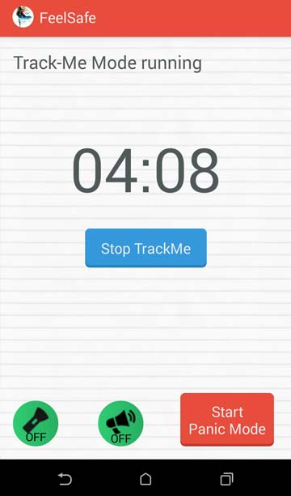

TrackMe mode is next big feature of Feelsafe.
TrackMe mode lets the prime contact you selected to know your location for every interval set in settings.
Imagine you are returning home from work in some auto and you feel unsafe, Trackme mode helps in these situations. Open Trackme tab select one or both PrimeContacts.
Suppose, it takes one hour from your work place to home. Enter the Event time at top for 1 hr and press Start button.

It then asks for a Message to send. Enter and press OK.
Track Me mode sends your locations to the selected contact for every 5 min ,by default. You can change the interval of sending the Message in Settings Buttton in home tab.

If you stop TrackMe mode before the timer ends, a message is sent to the selected contact informing the end of TrackMe mode.
If the reciever has FeelSafe app he gets app alert showing the map view of the user location.

In the end, when timer is finished a dialog is shown indicating the timer has finished and asking if you are safe and whether to Dismiss the timer or Start a new timer.
You are supposed to respond to the dialog in 2min, otherwise the PANIC MODE starts automatically,assuming that you are not safe.
The phone will be ringing and vibrating during these 2 min, for user to respond immediately.
Unlike Panic mode,TrackMe Mode sends location only through SMS service only.